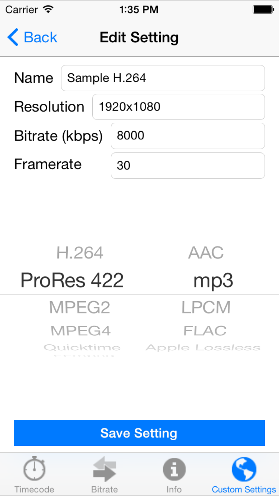
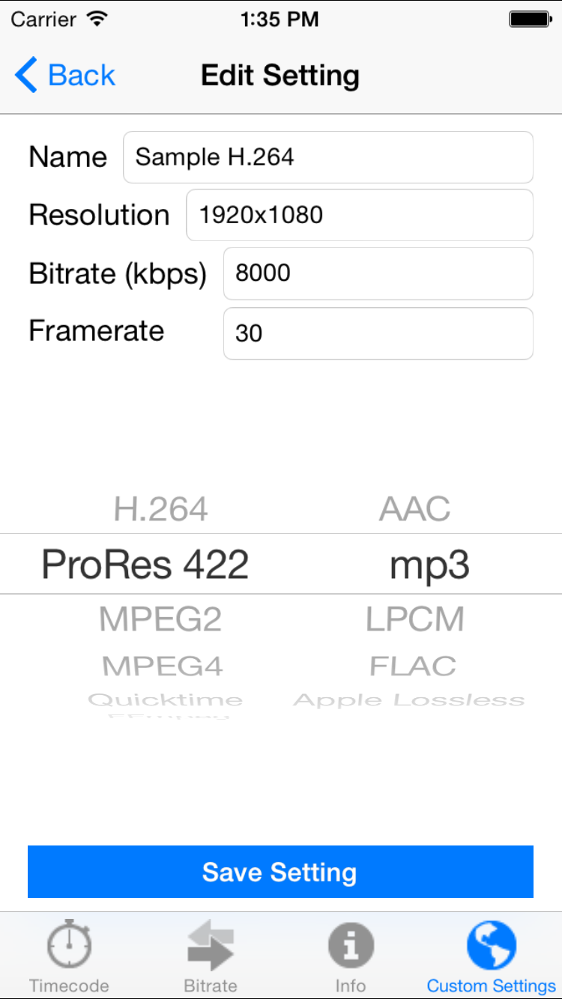

VTK (Video Toolkit)
Version: 1.0
VTK is a toolkit for video professionals, whether they be in live, filming, or editing. This tool allows the user to calculate timecode (potentially a very time consuming task otherwise), bitrate, and estimated file size for a number of formats.
Screenshots:

 

Download source code HERE or view Doxygen documentation Here!
This project would not have been made possible without...
- Stack Overflow: Tab Bar Covering Table View
- Youtube: Hiding Keyboard
- Youtube Support: Common Encoding Settings
- AppCoda: TableView Help
- TutsPlus.com: Keeping Content From Under The Keyboard